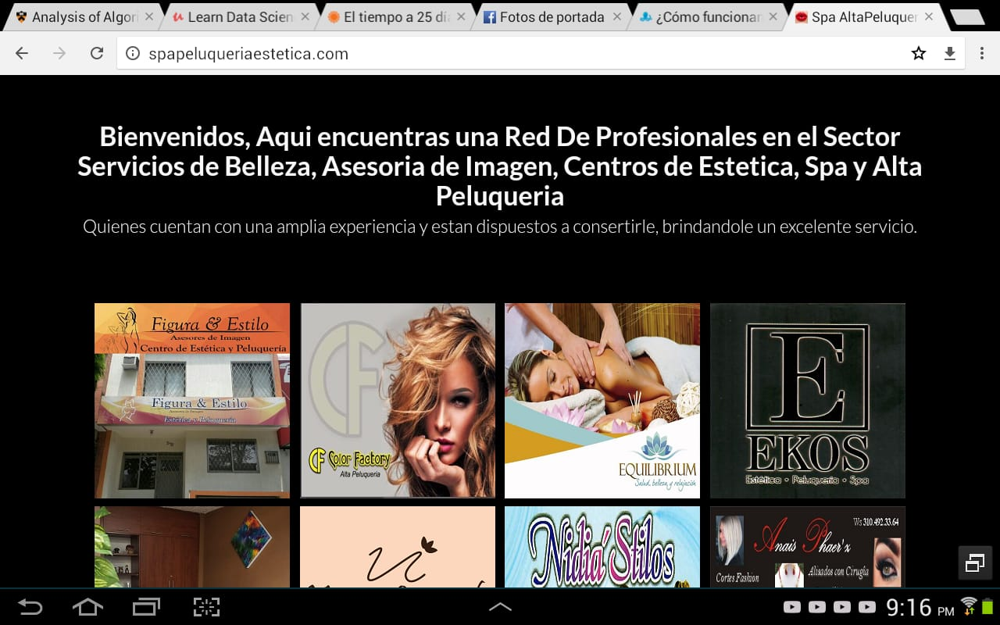
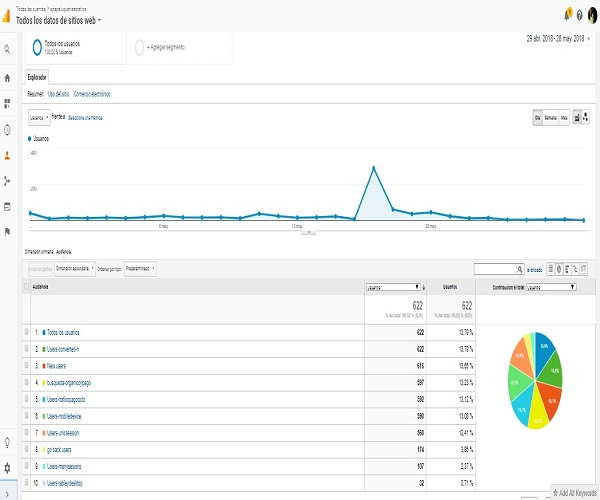
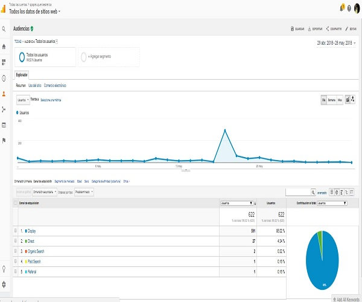
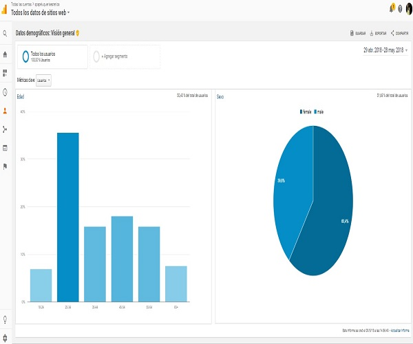
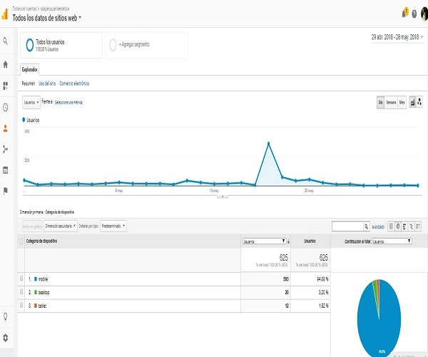

Este proyecto se inició con la expectativa de promocionar emprendimientos y personas independientes del sector de la belleza para estratos socioeconómicos 3 y 4 y poderles prestar el servicio de promocionarse con un precio asequible si se compara con el presupuesto que manejan otras agencia en Cali e incluso a nivel nacional para la plataforma de google adwords, por medio de un portal o si se le quiere llamar página web, ya que una de las formas de promocionarse con esta empresa de tecnología es por medio de página web y si se quiere aprovechar los beneficios que nos brinda con los códigos de seguimiento para conversiones y hacer remarketing es lo ideal para insertarlos allí y teniendo en cuenta que no todos los empresarios presupuestan un página web en sus costos.

Algunas de estas empresas del sector de la belleza cuentan con las tres unidades de negocio o dos unidades de negocios o solamente una unidad de negocio ya sea spa, peluquería o estética. En la ciudad de Cali hay aproximadamente unas 108 empresas relacionadas con este sector en los zonas geográficas del norte, oeste, sur y centro de Cali para los estratos socioeconómicos 3, 4, 5 y 6, importante resaltar no se tiene en cuenta los estratos 1 y 2.

Regresando a lo expuesto en el primer párrafo, la experiencia realizando el ejercicio de vender el servicio de marketing digital trabajando por medio del portal para promocionar y utilizando las diferentes herramientas que nos ofrece google ads, nos enfrentamos a un desconocimiento del tipo de servicio ofrecido por esta empresa de tecnología y a su vez una baja demanda por parte de estas empresas al menos en relación a esta plataforma de google, ya que eso no quiere decir que no estén pautando con redes sociales como Facebook o Instagram, a su vez que lo hagan ellos mismos con su tarjeta de crédito o que obtengan el servicio por medio de una agencia solo comprando asesoria para redes sociales.

Por lo anterior analizando esa baja demanda, nos encontramos con las siguientes factores relacionados a esta maravillosa experiencia ofreciendo el servicio: 1. Desconocimiento de Google ads como medio para publicitar 2. Escepticismo a publicitar en marketing digital, pues aun algunas empresas se resisten a entender que estamos en la era digital y hay otras maneras y que esas nuevas maneras se están afianzando en la consecución de nuevos clientes 3. Ideas sobre potencial riesgo de compartir un portal con sus supuestos competidores, a pesar de que se vendió la idea que la dinámica de los participantes que se encuentran allí son aliados estratégicos para soportar el presupuesto mensual digital y si son aliados estratégicos! 4. Cambio cultural, aún persiste el vos a vos, publicidad por medio de impresión de papel para los antejardines, megáfono en la calle, tipos de publicidad tradicional o de la era anterior a la actual 5. O pensamientos del porque pagar para que los clientes nuevos lleguen. Podrían llegar por obra y gracia del espíritu ……….? También situación económica, llevamos 3 años corridos de recesión económica en Colombia. 6. El uso de las redes sociales como Facebook, whatsapp e instagram compartiendo información con los mismos que ya los conocen sin generar nuevas oportunidades de prospectos regionalmente, nacional e incluso internacional, porque no? 7. La categoría del sector belleza tiene una de las demandas más bajas en consumo por parte de los consumidores colombianos de acuerdo a la información de afiliados de Google al menos para el mes de las madres en mayo si se compara con otras categorías de consumo 8. Por lo anterior tal vez aquí vemos cuales son las preferencias de los consumidores a la hora de que tipo de producto y/o servicios quieren regalar, sin embargo, con el marketing digital está comprobado que se puede cambiar ese pensamiento en los consumidores, influir en la manera en que estos eligen que categoría de producto demandar, hace falta más publicidad digital por parte de los empresarios de este sector para levantar la demanda de consumo de este sector?

Cabe resaltar que se encontró una buena aceptación de empresas que hasta al momento han participado de las tres campanas (que hasta el momento se han hecho) e incluso dos campanas. De acuerdo a la metodología del marketing digital para obtener unos excelente resultados se aconseja siempre contar con un presupuesto mensual para publicitar sin embargo eso varía de acuerdo a los objetivos que se requieren para alcanzar en el negocio o emprendimiento, el medio digital es una nueva forma de vender, como mínimo seis meses continuos son requeridos para alcanzar los objetivos de conocimiento de marca e impulsar las ventas.

Como conclusión para estrategias en marketing digital para alcanzar los objetivos mencionados en el párrafo anterior es importante conectar la analítica y las herramientas en conjunto tanto de Google ads y Facebook ads pues al insertar códigos de seguimiento (cookies) para crear en google lo que conoce como listas de remarketing que nos permiten hacer remarketing, es decir, impactar a aquellos que vieron los anuncios publicitarios y mostrárselos de nuevo, a su vez aplicando valores a las conversiones las cuales son interacciones que los usuarios que ven los anuncios realizan con los anuncios publicitados y creando los eventos en google tag manager para Facebook insertando también el pixel que nos proporciona se puede tener un retorno a la inversión, teniendo 100 veces mejores resultados que si solo se hace una publicidad promocionando sin ayuda de estas herramientas por una semana o un día en Facebook e instagram.